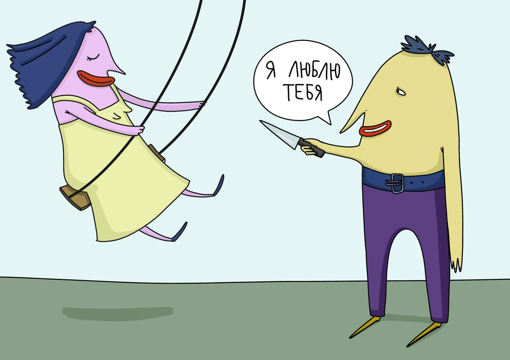

<--
Нарцисс и абьюзер. В чем разница?
Последние годы в интернете появилось очень много информации, касающейся деструктивных отношений. Очень многие путают понятия абьюзера и нарцисса (человека с нарциссическим расстройством личности). На самом деле разница есть и она огромная. Давайте попробуем разобраться.
Итак, кто же такие абьюзеры? Простыми словами - это люди обидчики. Да, они обижают, оскорбляют, применяют насилие (психологическое, физическое). Но по сути у них нет расстройства личности, то есть психика их здорова. Безусловно, они могут обесценивать, оставлять душевные травмы, унижать, насмехаться, отношения с ними очень токсичны и деструктивны. Но у них есть способность саморефлексировать, они могут понять и принять, испытывать чувства вины. Не каждый абьюзер нарцисс. Но каждый нарцисс - абьюзер.
Как я уже неоднократно писала в своих статьях, нарциссы лишены эмпатии, саморефлексии, вся их жизнь сплошная манипуляция, коварный план и хорошо продуманная стратегия, как найти жертву, напитаться ее ресурсом и утилизировать ее. Опознать нарцисса можно только по поведению, наблюдая за ним. Нарциссы - совсем не те люди, которые любят себя, постоянно смотрят на себя в зеркало, делают селфи и довольствуются своей фигурой. Это нечто другое. В этих людях нет души. Отношения с нарциссом - это определенный цикл. Цикл в 3 этапа - сахарное шоу, обесценивание и утилизация.

Сахарное шоу - это не только красивые ухаживания, цветы, рестораны, путешествия. Патология в том, что это очень сильная психологическая привязка, прощупывание личных границ, постоянная связь, моментальное сближение, когда вы отчитываетесь, ему где находитесь, проявление гиперконтроля, он изучает вас, вживается под кожу, становится вашей жизнью. После этого начинается обесценивание, психологическое насилие, унижения. Эта стадия может проявиться спустя несколько месяцев, а может - спустя годы.
Многие девушки после многочисленных статей про нарциссов, абьюзеров, ошибочно видят в своих партнерах признаки НРЛ. Да, безусловно, нарциссов среди нас много, но не стоит всех "стричь под одну гребенку".